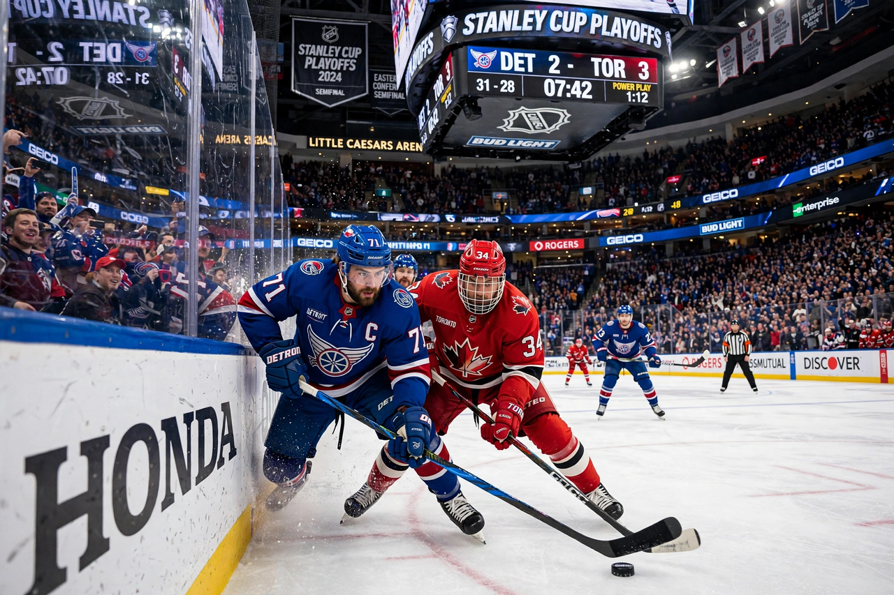

National Hockey League

| Sport | Ice hockey |
|---|---|
| Founded | November 26, 1917, Montreal, Canada |
| Teams | 32 (25 in the US, 7 in Canada) |
| Commissioner | Gary Bettman |
| Trophy | Stanley Cup |
| Most Cups | Montreal Canadiens (24) |
The National Hockey League (NHL, French: Ligue nationale de hockey) is a professional ice hockey league in North America comprising 32 teams, 25 in the United States and 7 in Canada. It is considered the world's premier professional ice hockey league, and its championship trophy, the Stanley Cup, is the oldest professional sports trophy in North America, first awarded in 1893.
History
The NHL was founded in Montreal in 1917, succeeding the National Hockey Association. From 1942 to 1967 the league consisted of the "Original Six" franchises — the Boston Bruins, Chicago Black Hawks, Detroit Red Wings, Montreal Canadiens, New York Rangers and Toronto Maple Leafs — before doubling in size in the great expansion of 1967. The league later absorbed four teams from the rival World Hockey Association in 1979, and expanded across the Sun Belt United States from the 1990s, with recent additions including the Vegas Golden Knights (2017), Seattle Kraken (2021) and the Utah franchise (2024).
Format and records
Teams play an 82-game regular season, and 16 qualify for the Stanley Cup playoffs, a sequence of best-of-seven series. The Montreal Canadiens have won the most Stanley Cups (24). Wayne Gretzky, "The Great One", holds nearly all major scoring records from his career with Edmonton, Los Angeles, St Louis and the New York Rangers; Alex Ovechkin has been closing in on Gretzky's career goals record of 894. As of the mid-2020s the Florida Panthers are the most recent back-to-back champions, winning in 2024 and 2025.
See also: NBA.